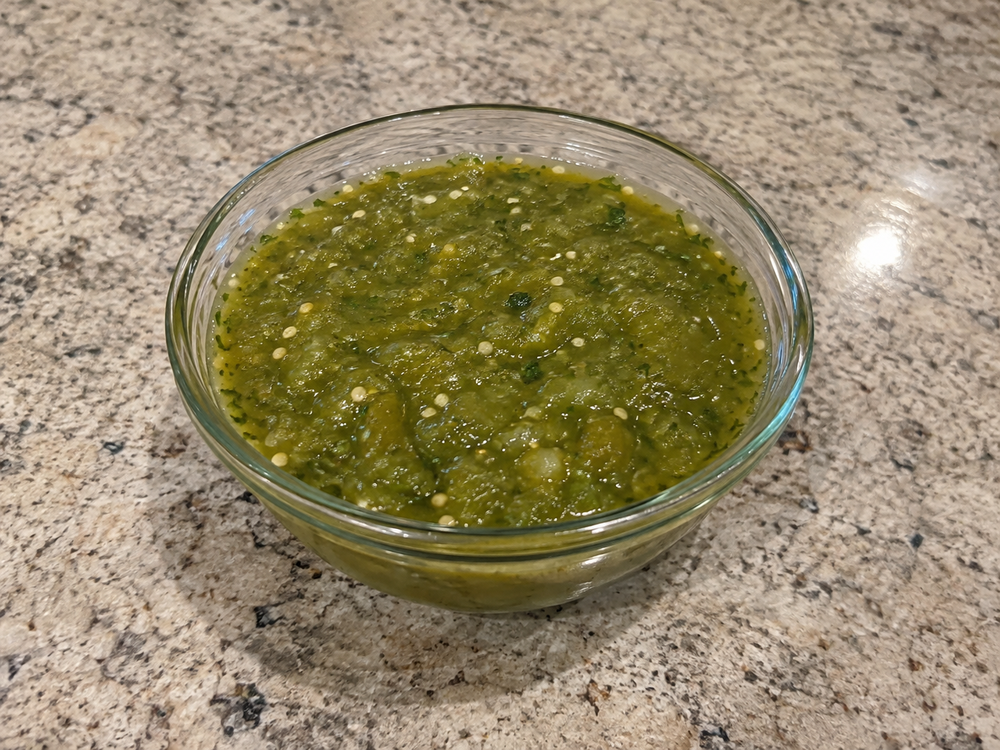

Salsa Verde Recipe
Ingredients
- Tomatillos: You'll need about x12 of these.
- Diced Onions: You need a ½ cup of these.
- Garlic: You will need x3 cloves.
- Cilantro: ½ of a cup will work great.
- Green chilie: You'll need x1 of these.
- Salt: You'll need x1 teaspoon of salt.

Recipe Info
This recipe serves 8 people and takes about 15 minutes of prep and 6 minutes of cooking time. While it can be hard to find the ingidients its a quick and lovely tart salsa dish that goes good with almost anything.
Instructions
- Set the oven to Broil and set up a pan with aluminum foil.
- Peel the tomatillos and rinse them under cold water to get rid of extra milldue. Then cut them in half and place on the foil-lined pan.
- Slice the chillies in half and smash the garlic into cloves. Then place them on the foil-lined pan alongside the tomatillos.
- Put the pan in the over and broil for a total of 5-7 minutes, while rotating as needed.
- Set pan to rest for about 15 minutes and strain the chopped garlic until cold water.
- Finally, put the ingridients into a blender , add the salt and a bit of water, then blend until smooth or to your liking.